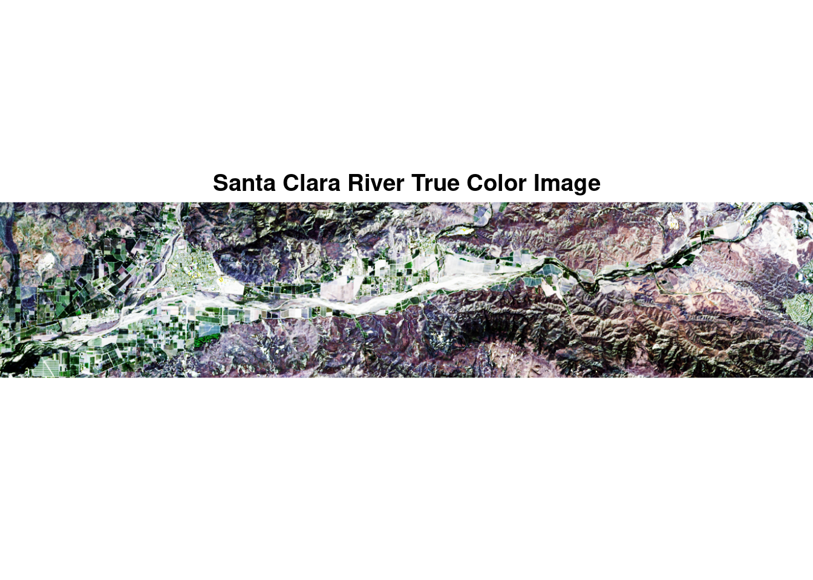
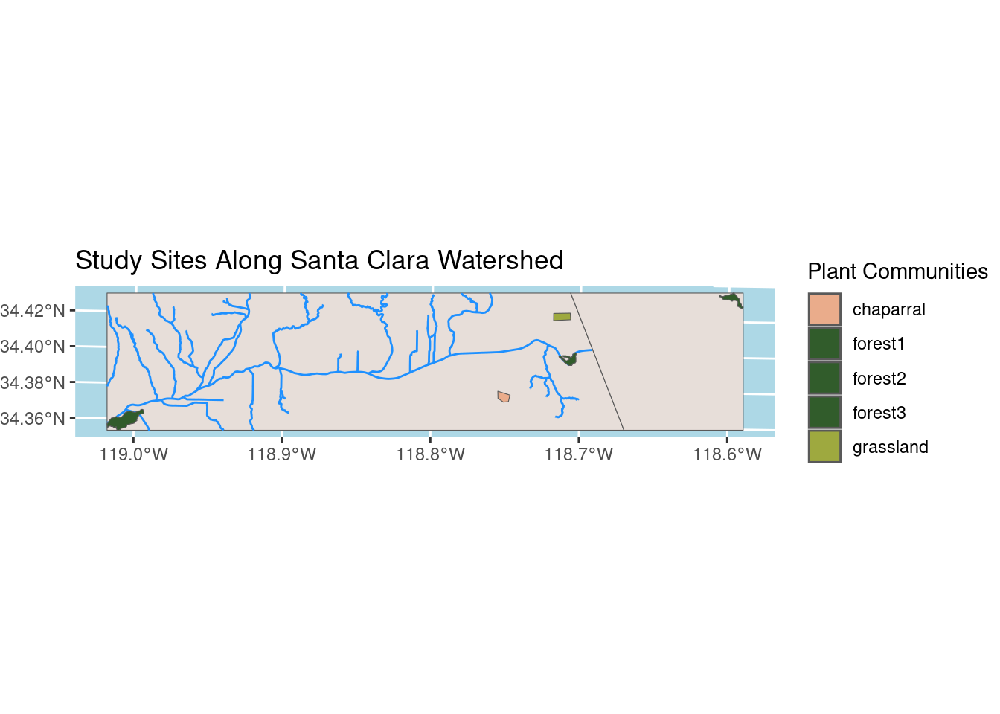

NDVI Assesment of Santa Clara River Plant Communities
Author
Briana Barajas
Published
December 15, 2023
Background
While many organisms in nature experience phenological cycles, plant pheology is one of the most easily recognized. Phenological events for plants include leaf growth, flowering, and leaf death (also known as senescence). The timing of these events is based on climate conditions, so that plants may ensure successful reproduction. As the climate changes, phenological cycles in plants can be disrupted. For this reason, changes in plant phenology are used to estimate how ecosystems are responding to climate change.
This analysis utilizes satellite data to estimate the normalized difference vegetation index (NDVI) to examine plant phenology near the Santa Clara River. The Santa Clara River flows from Santa Clarita to Ventura, and remains relatively natural compared to other rivers in California. Additionally, the river provides water for agriculture, and habitat for several endangered plant and animal species. For these reasons, there have been significant efforts to conserve and restore the riparian habitat surrounding the river1. With this in mind, I calculated and analyzed the phenology of the following plant communities:
riparian forests: grow along the river, dominated by winter deciduous cottonwood and willow trees
grasslands: grow in openspaces, dominated by drought deciduous grasses
chaparral shrublands: grow in more arid habitats, dominated by evergreen shrubs
credit: this post is based on a materials developed by Chris Kibler, with additional assistance from Ruth Oliver
The data that will be used to calculate NDVI is from the Landsat Operational Land Imager (OLI) sensor. There are 8 total landsat .tif files which contain level 3 surface reflectance products where erroneous values were set to NA, scale factor is set to 100, and bands 2-7 are present. The date of collection is at the end of each file name.
Study Sites
Study sites are available as vector data (polygons) with character strings as the plant type. This data will be used to classify the plant communities of interest.
Compute Initial NDVI
NDVI was computed for all 8 Landsat images. The date range is between June 2018 and July, 2019. Ideally this will provide an accurate estimate of annual phonological changes in NDVI.
Reading layer `study_sites' from data source
`/Users/bri_b/Documents/School/F23/eds-223/assignments/santa-clara-river-ndvi/data/study_sites.shp'
using driver `ESRI Shapefile'
Simple feature collection with 5 features and 1 field
Geometry type: POLYGON
Dimension: XY
Bounding box: xmin: 314413.3 ymin: 3803180 xmax: 353848.7 ymax: 3811694
Projected CRS: WGS 84 / UTM zone 11N
Reading layer `Redlines' from data source
`/Users/bri_b/Documents/School/F23/eds-223/assignments/santa-clara-river-ndvi/data/Redlines/Redlines.shp'
using driver `ESRI Shapefile'
Simple feature collection with 447 features and 10 fields
Geometry type: MULTILINESTRING
Dimension: XY
Bounding box: xmin: -119.4783 ymin: 34.05312 xmax: -118.6388 ymax: 34.81258
Geodetic CRS: WGS 84
Reading layer `CA_Counties_TIGER2016' from data source
`/Users/bri_b/Documents/School/F23/eds-223/assignments/santa-clara-river-ndvi/data/CA_Counties/CA_Counties_TIGER2016.shp'
using driver `ESRI Shapefile'
Simple feature collection with 58 features and 17 fields
Geometry type: MULTIPOLYGON
Dimension: XY
Bounding box: xmin: -13857270 ymin: 3832931 xmax: -12705030 ymax: 5162404
Projected CRS: WGS 84 / Pseudo-Mercator
In order to facilitate NDVI calculation, the function below is designed to read in all raster files, rename their bands, and calculate NDVI. Once all NDVI’s were calculated, they were stacked and assigned names that corresponded to their date.
View Code
#function reads in data, renames bands, and calc NDVIcreate_ndvi_layer <-function(i){ landsat <-rast(landsat_files[i]) #read in data names(landsat) <-c("blue", "green", "red", "NIR", "SWIR1", "SWIR2") #rename bands ndvi <-lapp(landsat[[c(4, 3)]], fun = ndvi_fun) #NDVI}# stack raster with NDVI data using function aboveall_ndvi <-c(create_ndvi_layer(1),create_ndvi_layer(2),create_ndvi_layer(3),create_ndvi_layer(4),create_ndvi_layer(5),create_ndvi_layer(6),create_ndvi_layer(7),create_ndvi_layer(8))# add dates to corresponding layernames(all_ndvi) <-c("2018-06-12","2018-08-15","2018-10-18","2018-11-03","2019-01-22","2019-02-23","2019-04-12","2019-07-01")
Exploratory Maps
True Color Image:
Assessing true color imagery before NDVI can be useful for quickly recognizing different types of terrain. Here, I created a simple true color image of the Santa Clara River area using one of a single Landsat from June, 2018.
View Code
# create a true color imageplotRGB(single_landsat_rast, 3, 2, 1, stretch="hist",main ="Santa Clara River True Color Image")

Study Site Location Along Santa Clara Watershed:
The following visualization depicts the Santa Clara River, as well as other rivers within the Santa Clara Watershed. The plant communities (study sites), were added as well for geographical context.
View Code
## ========== Data Preparation ==========# filter VC river data to SC watershedsc_watershed <- vc_rivers %>%filter(WATERSHED =="SANTA CLARA RIVER WATERSHED") %>%#filterst_transform(crs ='epsg:32611') %>%#reprojectst_crop(study_sites)# filter state data to counties new watershedventura <- states %>%st_crop(study_sites) #crop county to watershed# create custom color palettephenology_pal <-c("#EAAC8B", "#315C2B", "#315C2B", "#315C2B","#9EA93F")## ========== Plot Data Together ==========# create map combining watershed, study sites, and countiesggplot() +geom_sf(data = ventura, fill ='#E7DED9') +geom_sf(data = sc_watershed, color ='dodgerblue') +geom_sf(data = study_sites,mapping =aes(fill = study_site)) +scale_fill_manual(values =c("#EAAC8B", "#315C2B", "#315C2B", "#315C2B","#9EA93F")) +labs(title ="Study Sites Along Santa Clara Watershed",fill ="Plant Communities",x=NULL,y=NULL) +theme(panel.background =element_rect(fill='lightblue'),plot.margin=grid::unit(c(0,0,0,0), "mm"))

Footnotes
“Santa Clara River.” The Nature Conservancy, www.nature.org/en-us/get-involved/how-to-help/places-we-protect/the-nature-conservancy-in-california-santa-clara-river-california-con/#:~:text=The%20Santa%20Clara%20River%20is%20a%20vital%20source%20of%20drinking,bustling%20Los%20Angeles%2DVentura%20region. Accessed 15 Dec. 2023.↩︎